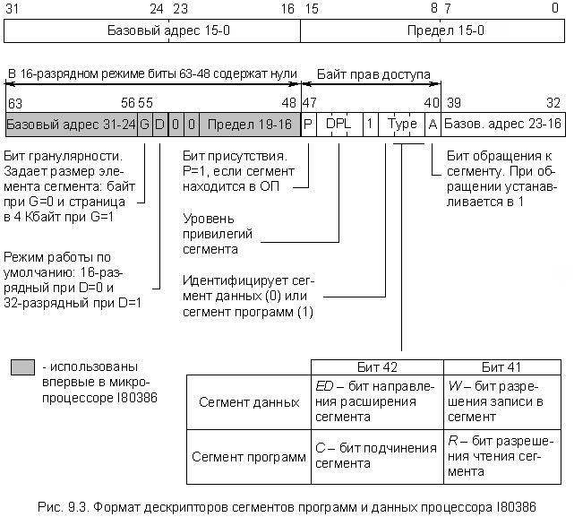
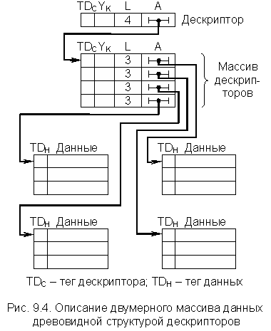
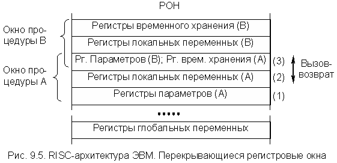

Предметом нашего изучения является цифровое устройство переработки информации, построенное в соответствии с классической пятиблочной структурой фон Неймана, или, иными словами, – ЭВМ. Таким образом, речь шла только об ЭВМ, в которой информация перерабатывается в одном процессорном устройстве (центральном процессоре) последовательно, без распараллеливания вычислительного процесса, которое имеет место в многопроцессорных и многомашинных вычислительных системах (о них речь пойдет в последних разделах настоящего курса). Отмечалось, что в процессе эволюции классическая структура ЭВМ претерпела некоторые изменения, в частности, изменилось устройство памяти, организация которого стала иерархической. Однако это далеко не все изменения, которые произошли с классической пятиблочной структурой ЭВМ и ее основными принципами функционирования, сформулированными фон Нейманом.
Ниже очень коротко рассматриваются некоторые элементы архитектуры современных ЭВМ четвертого поколения, которые выходят за рамки классических структур и принципов функционирования первых ЭВМ различных классов. Материал раздела, по возможности, иллюстрируется примерами построения упрощенных элементов вычислительных устройств на базе процессора I80386, структуры которых достаточно прозрачны.
Одним из эффективных средств совершенствования архитектуры современных ЭВМ является теговая организация памяти, при которой каждое хранящееся в памяти или регистре слово снабжается тегом. Тег определяет тип данных – целое число, ЧПЗ, десятичное число, адрес, строку символов, дескриптор и т.д. В поле тега обычно указывают не только тип, но и длину (формат) и некоторые другие его параметры. Теги формируются компилятором. Формат данных, хранимых в памяти, при этом имеет вид, изображенный на рис. 9.1.
Наличие тегов придает хранящимся в машине данным свойство самоопределяемости. Это принципиальная особенность в функционировании ЭВМ.
Следует отметить, что ЭВМ с теговой памятью выходят за рамки модели вычислительной машины фон Неймана именно в результате самоопределяемости данных. Классическая модель фон Неймана исходит из того, что тип (характер) данного, хранящегося в памяти, определяется только в контексте выполнения программы, а точнее, команды, использующей данное в качестве операнда. В обычных ЭВМ, соответствующих классической модели фон Неймана, тип данных-операндов и их формат задаются кодом операции команды, а в ряде случаев размер (формат) операндов определяется специальными полями команды.
Например, в IBM-360/370 команда десятичное сложение самим своим кодом операции определяла, что адресуемые ею операнды являются десятичными числами. Специальные четырехразрядные поля в этой команде задавали число десятичных цифр в 1-м и 2-м операндах. Таким образом, в IBM-360/370 имелось 256 кодов только одной команды десятичное сложение.
Теговая организация памяти позволяет достигнуть инвариантности команд относительно типов и форматов операндов, что приводит к значительному сокращению набора команд машины. Это упрощает и делает более регулярной структуру процессора. Кроме того, такая организация памяти дает еще ряд преимуществ, а именно:
Теговая организация памяти способствует реализации принципа независимости программ от данных.
И, наконец, нечто неожиданное. Использование тегов приводит к экономии памяти, несмотря на удлинение формата данных. Это объясняется тем, что в программах обычных машин имеется большая информационная избыточность на задание типов и размеров операндов при их использовании несколькими командами.
К недостаткам такой организации памяти можно отнести некоторое замедление работы процессора из-за того, что установление соответствия типа команды типу данных в обычных ЭВМ выполняется на этапе компиляции, а при использовании тегов переносится на этап выполнения программы.
дескрипторы – служебные слова, содержащие описания массивов данных и команд. Дескрипторы могут употребляться как в машинах с теговой организацией памяти (например, ЭВМ "Эльбрус"), так и без тегов (например, компьютеры фирмы IBM на процессорах I80286 и старше). В последнем случае достигается ограниченная самоопределяемость данных.
Дескриптор содержит сведения о размере массива данных, его местоположении (в ОП или ВП), адресе начала массива, типе данных, режиме защиты данных (например, запрет записи в ячейки массива) и некоторых других параметрах данных, которые позволяют упростить работу с массивами. Так, задание в дескрипторе размера массива позволяет контролировать выход за его границу при индексации его элементов.
Следует отметить, что, судя по приводимым в литературе сведениям, первоначально дескрипторы (как и теги) использовались главным образом в больших и суперЭВМ, имеющих в своем составе конвейерные и матричные процессоры и относящихся к классу вычислительных комплексов и систем (более подробно речь о них пойдет в последних разделах настоящего курса – "Многопроцессорные системы").
В качестве примера рассмотрим один из видов дескрипторов – дескриптор данных в машине B6700 фирмы Burroughs (рис. 9.2).
Дескриптор содержит специфический тег ТДс, указывающий, что данное слово является дескриптором определенного вида, группу указателей и два поля A и L/X. Поле A указывает адрес начала массива данных. В зависимости от значения указателя I дескриптор описывает массив данных (I = 0)– и в соответствующее поле помещается длина массива L, или описывает элемент массива (I = 1)– и тогда в поле находится индекс X. Этот индекс указывает смещение элемента относительно начала массива. Указатель P определяет, находится массив в оперативной памяти или ВП, т.е. его можно назвать "Указатель присутствия". В последнем случае (нахождение в ВП) поле A указывает местоположение массива во внешней памяти. Остальные указатели имеют следующий смысл:
Процессоры фирмы Intel, начиная с модели I80386, снабжены средствами, позволяющими реализовать механизм разделения логического адресного пространства памяти на страницы (4 Кбайт) и сегменты разного размера (сегменты программ, данных, системные сегменты и т.д.). Более подробно этот вопрос обсуждается в п. 9.4. Все сегменты рассматриваются как массивы, и для их описания и адресации используются дескрипторы. Каждая задача может иметь системное и индивидуальное логическое адресное пространство. Эти пространства описываются соответственно глобальной (GDT) и локальной (LDT) таблицами дескрипторов сегментов, каждая из которых может содержать максимум 8192 дескриптора. На рис. 9.3 представлен формат дескрипторов сегмента программ и сегмента данных процессора I80386.

Назначение полей дескриптора приведено на рис. 9.3, однако необходимо сделать некоторые пояснения:
Использование в архитектуре ЭВМ дескрипторов подразумевает, что обращение к информации в памяти производится через дескрипторы, которые при этом можно рассматривать как дальнейшее развитие аппарата косвенной адресации. Адресация информации в памяти может осуществляться с помощью цепочки дескрипторов. При этом реализуется многоступенчатая косвенная адресация. Более того, сложные многомерные массивы данных (таблицы и т.п.) эффективно описываются древовидными структурами дескрипторов. Это можно проиллюстрировать упрощенной схемой на рис. 9.4.

Термины "тег" и "дескриптор" достаточно широко используются в технической литературе при обсуждении вопросов организации ЭВМ и вычислительных процессов. Однако трактовка этих терминов во многих случаях достаточно неоднозначна, особенно в технических описаниях конкретных процессоров и ЭВМ различных производителей, поэтому необходимо всегда учитывать контекст, в котором используются указанные термины.
Развитие архитектуры ЭВМ, направленное на повышение их производительности, в последние десятилетия шло по пути усложнения процессоров путем расширения системы команд, введения сложных команд, выполняющих процедуры, приближающиеся к примитивам языков высокого уровня, увеличения числа используемых способов адресации и т.д.
Однако расширение и усложнение набора команд порождает и ряд нежелательных побочных эффектов. Расширение набора команд, числа способов адресации, введение сложных команд сопровождается увеличением длины команды и, в первую очередь, кода операции, что ведет к увеличению числа форматов команд. Это вызывает усложнение и замедление процесса дешифрации кода операции и других процедур обработки команд в процессоре. Возрастающая сложность процедур обработки команд заставляет использовать микропрограммные управляющие устройства с управляющей памятью (микропрограммные УУ) вместо более быстродействующих УУ с жесткой логикой. Усложнение процессора делает более трудным и даже невыполнимым реализацию его на одном кристалле БИС. А размещение процессора в одном кристалле за счет сокращения длин межсоединений облегчает достижение высокой производительности.
Сказанное выше объясняет, почему в начале 80-х гг. сформировалось альтернативное по отношению к усложнению архитектуры процессоров направление. При создании относительно дешевых высокопроизводительных ЭВМ оно использует архитектуру с сокращенным набором команд (СНК-архитектура), называемую в зарубежной литературе RISC-архитектурой. Ниже рассматриваются только основные принципы, заложенные в основу классической RISC-архитектуры.
RISC-архитектура предполагает реализацию в ЭВМ сокращенного набора простейших, но часто употребляемых команд. Это позволяет упростить аппаратные средства процессора и получить возможность повысить его быстродействие. При использовании RISC-архитектуры выбор набора команд и структуры процессора направлены на то, чтобы команды набора выполнялись за один машинный цикл процессора. Выполнение более сложных, но редко встречаемых операций обеспечивают подпрограммы.
В RISC-ЭВМ машинным циклом называется время, в течение которого производится выборка двух операндов из регистров, выполнение операции в АЛУ и запоминание результатов в регистре. Большинство команд в RISC являются быстрыми командами типа "регистр-регистр" и выполняются без обращения к ОП. Для того чтобы это было возможно, процессор должен содержать достаточно большое число общих регистров.
Таким образом, ЭВМ RISC-архитектуры имеют ряд характерных особенностей:
Все это упрощает УУ процессора и позволяет обходиться без микропрограммного уровня управления и управляющей памяти, т.е. УУ может быть выполнено на быстродействующей жесткой логике.
Рассмотренные выше особенности, присущие ЭВМ RISC-архитектуры, приводят к столь значительному упрощению процессора, что возникает возможность размещения в одном кристалле не только процессора, но и большого количества общих регистров. В современных БИС МП RISC-архитектуры число общих и специализированных регистров достигает десятков и сотен при существенном сокращении общего числа транзисторов процессора. Так, например, для реализации 32-разрядных процессоров RISC-архитектуры, соответствующих производительности процессоров класса I80386, требуется менее 50 000 транзисторов, в то время как для процессоров традиционной архитектуры (CISC) – более 150 000.
Большое число РОН, особенно при наличии обеспечивающего их эффективное использование "оптимизирующего компилятора", позволяет до предела сократить обращение к ОП. Это достигается:
Одной из характерных особенностей RISC-архитектуры является широкое использование механизма перекрывающихся регистровых окон. Он предназначен для уменьшения числа обращений к ОП и межрегистровых передач, что способствует повышению производительности ЭВМ.
Процедурам динамически выделяются небольшие группы регистров фиксированной длины (регистровые окна). Окна последовательно выполняемых процедур перекрываются, благодаря чему возможна передача параметров от одной процедуры к другой. При вызове процедуры процессор переключается на работу с другим регистровым окном. При этом не возникает необходимость в передаче содержимого регистров в память.
Окно состоит из трёх подгрупп регистров (рис. 9.5). Полагаем, что вызов процедур идет снизу вверх, т.е. процедура A вызывает процедуру B, причем сама была вызвана некоторой предшествующей процедурой. Первая подгруппа содержит параметры, переданные данной процедуре (A) от ее вызвавшей, и результаты для вызывающей процедуры при возврате в нее. Вторая подгруппа содержит локальные переменные процедуры A. Третья является буфером для двухстороннего обмена между процедурой A и вызываемой ею процедурой B. Процедура A передает B параметры при вызове. При возврате из процедуры B в процедуру A последняя получает через этот буфер результаты работы процедуры B. Таким образом, одна и та же подгруппа для процедуры A является регистрами временного хранения, а для следующей (процедуры B) – регистрами параметров. Отдельное окно, доступное всем процедурам программы, выделяется для ее глобальных переменных.

Следует отметить, что компьютеров, полностью удовлетворяющих определению RISC-архитектуры, относительно немного. В большинстве случаев это компьютеры, близкие к RISC-архитектуре. Например, одним из первых компьютеров такого типа являлся высокопроизводительный РС фирмы IBM PC-RT. Он имел 118 команд, всего два способа адресации и два формата команд, 16 РОН, среднее число циклов на команду – три. К чисто RISC-архитектуре принято относить процессоры серии "Alpha" фирмы DEC, серию процессоров "Power PC" совместной разработки фирм Motorola, EPL, IBM, серию процессоров "Rxxxx" (R4000, R5000, R10000) фирмы Mips, серию процессоров "РА" фирмы Hewlett Packard, серию процессоров "SPARC" фирмы Sun Microsystems и др.
Несмотря на широкое использование в литературе терминов "RISC" и "CISC", архитектуры современных мощных процессоров трудно поддаются однозначной классификации. Это связано со стремительным усложнением кристаллов процессоров обоих типов архитектур (RISC и CISC), а также с тем, что в целях повышения производительности разработчики объединяют конструктивные решения, характерные для обоих типов архитектур, в одном устройстве. Так, в мощных CISC-процессорах стало обычным использование RISC-ядра, которое позволяет выполнять сложные команды процессора как наборы элементарных команд, реализуемых по принципам RISC-архитектуры.
Следует отметить также, что принципы RISC-архитектуры заложены в идеологию построения транспьютеров, составляющих основу современных матричных процессоров, используемых в суперЭВМ, а также в платах-"ускорителях" для персональных компьютеров.
Несмотря на интенсивное использование RISC-архитектуры в серийных образцах ЭВМ, продолжаются споры вокруг достоинств и недостатков этой архитектуры. К последним, в частности, относят большую длину кода программы после компиляции (объектного кода) по сравнению с длиной кода машин обычной архитектуры. Так, при эмуляции команд ЭВМ типа VAX в среднем на каждую его команду требуется 5-6 команд машин RISC-архитектуры. Однако, как показали исследования, выигрыш в скорости выполнения команд перекрывает проигрыш от удлинения объектного кода (в общих показателях качества ЭВМ).